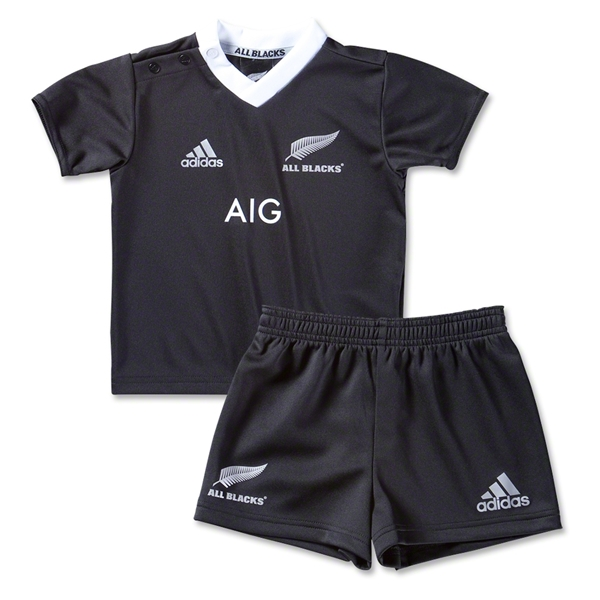
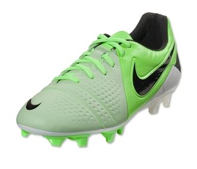

Great training ball to toss around the pitch at practice!
The A-XV Size 5 Training Rugby Ball is manufactured out of
Hydratec fabric. Meaning technical fabrics and waterproof
laminations are combined to enhance the life and performance
of the ball. Training Balls are made to last longer as they
are used more than match balls. They also have a hydratec
barrier in their construction, which helps to repel water
and dirt which helps to maintain the quality and shape of
the balls. All balls require inflation upon delivery.
$35.95
Rugby Replica Room
Adidas New Zealand 13/14 Sevens Jersey - Black/White

Show your support for the The reigning 7's World Champions.
Made by adidas from 100% polyester, the New Zealand 13/14 Sevens
Jersey is a replica of the players jersey worn on the World Sevens
circuit. The famous black look is retained and given a fresh look
with the application of a white collar and adidas three stripes
running over the shoulders. A slick new addition is that of grey
stripes down the side of the body to further enhance the splendid
design of this jersey.
$105.60
Rugby Boots
Nike CTR360 Maestri III FG (Fresh Mint) - Green/White

Leather with the lightweight durability of a synthetic.
3D control pads (raised pods and fins on the instep) maximize the
area where the ball comes into contact with the shoe, giving you
an edge when it comes to passing and receiving.Highly responsive
platemade from a combination of lightweight materials for quicker
ground penetration and release. WEIGHT: 9.2 oz.